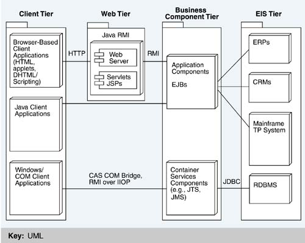
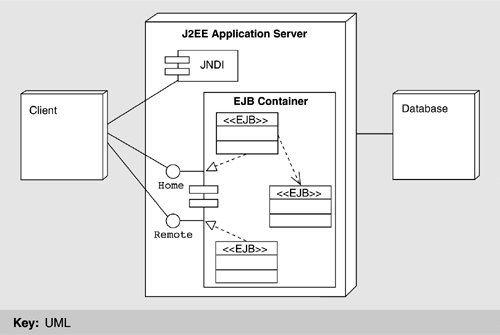
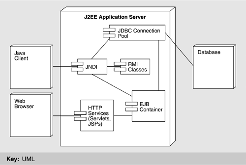
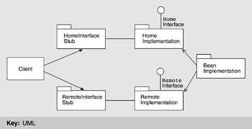

| [ Team LiB ] |
|
16.3 Architectural SolutionSun Microsystem's approach to satisfying the quality attributes discussed in the previous section is through the specification of two major architectures: J2EE and the EJB. J2EE describes the overall multi-tier architecture for designing, developing, and deploying component-based, enterprise-wide applications. EJB is a key part of J2EE technology, reflecting the deeper technical requirements of buildability, extensibility, and interoperability. Both J2EE and EJB reflect balanced specificity듮hat is, the ability for competitors to develop differentiation on the offerings while building them on a common base. The major features of the J2EE platform are
A simple deployment view of the J2EE multi-tier model is given in Figure 16.2. The elements of this architecture are further described in Table 16.3. Figure 16.2. Deployment view of the J2EE multi-tier architecture
The role of each tier is as follows.
THE EJB ARCHITECTURAL APPROACHThe remainder of this chapter focuses on the Enterprise JavaBeans architecture, which defines a standard programming model for constructing distributed object-oriented server-side Java applications. Because this programming model is standard, many beans that prepackage useful functionality can be (and have been) written. The EJB programmer's job is to bundle these packages with any application-specific functionality to create a complete application. Not unlike J2EE, EJBs aim at realizing one of Java's major design principles듮he oft-quoted "Write Once, Run Anywhere" mantra. The JVM allows a Java application to run on any operating system. However, server components require additional services that are not supplied directly by the JVM, such as transaction and security services. In J2EE and EJB, these services are supplied through a set of standard vendor-independent interfaces that provide access to the additional supporting infrastructure, which together form the services available in an application server. A J2EE-compliant application server provides an EJB container to manage the execution of application components. In practical terms, a container provides an operating system process that hosts one or (usually) more EJB components. Figure 16.3 shows the relationship between an application server, a container, and the services provided. In brief, when a client invokes a server component the container automatically allocates a thread and invokes an instance of the component. The container manages all resources on the component's behalf and manages all interactions between the component and the external systems. Figure 16.3. Example deployment view of the EJB architecture The EJB component model defines the basic architecture of an EJB component, specifying the structure of its interfaces and the mechanisms by which it interacts with its container and other components. The model also provides guidelines for developing components that can work together to form a larger application. The EJB version 1.1 specification defines two main types of components: session beans and entity beans.
Table 16.4 summarizes how the EJB architecture supports Sun's key quality attribute requirements for the overall J2EE architecture. An example deployment view of the J2EE/EJB architecture is illustrated in Figure 16.4. Figure 16.4. An example J2EE/EJB-compliant implementation
EJB PROGRAMMINGAn EJB depends on its container for all external information. If an EJB needs to access a JDBC connection or another bean, it uses container services. Accessing the identity of its caller, obtaining a reference to itself, and accessing properties are all accomplished through container services. This is an example of an "intermediary" tactic. The bean interacts with its container through one of three mechanisms: callback methods, the EJBContext interface, and the Java Naming and Directory Interface (JNDI). To create an EJB server-side component, the developer must provide two interfaces that define a bean's business methods, plus the actual bean implementation class. The two interfaces, remote and home, are shown in Figure 16.5. Clients use them to access a bean inside an EJB container. They expose the capabilities of the bean and provide all the methods needed to create the bean and update, interact with, or delete it. Figure 16.5. EJB package diagram The two interfaces have different purposes. Home contains the life-cycle methods of the EJB, which provide clients with services to create, destroy and find bean instances. In contrast, remote contains the business methods offered by the bean. These methods are application specific. To use them in the bean's remote interface, clients must use the bean's home interface to obtain a reference to the remote interface. A simple home interface is shown in Figure 16.6. It must inherit from EJBHome and, in this example, contains a method to create an EJB of type Broker. Figure 16.7 shows the remote interface for the Broker EJB. Remote interfaces must extend the EJBObject interface, which contains a number of methods that the container uses to manage an EJB's creation and life cycle. A programmer may wish to provide bean-specific behavior for the EJB, or may simply accept the default, inherited behavior. The client then uses public interfaces to create, manipulate, and remove beans from the EJB server. The implementation class, normally known as the bean class, is instantiated at runtime and becomes an accessible distributed object. Some sample client code, simplified, is shown in Figure 16.8. Figure 16.6 A simple home interface
public interface BrokerHome extends EJBHome
{
/*
* This method creates the EJB Object.
*
* @return The newly created EJB Object.
*/
Broker create() throws RemoteException, CreateException;
}
Figure 16.7 The Broker remote interface
public interface Broker extends EJBObject
{
// Return the newly created account number
public int newAccount(String sub_name, String sub_address, int
sub_credit) throws RemoteException, SQLException;
public QueryResult queryStockValueByID(int stock_id)
throws RemoteException, SQLException;
public void buyStock(int sub_accno, int stock_id, int amount)
throws RemoteException, SQLException, TransDenyException;
public void sellStock(int sub_accno, int stock_id, int amount)
throws RemoteException, SQLException, TransDenyException;
public void updateAccount(int sub_accno, int sub_credit)
throws RemoteException, SQLException;
public Vector getHoldingStatement(int sub_accno,int start_
stock_id) throws RemoteException, SQLException;
}
EJB clients may be standalone applications, servlets, applets, or even other EJBs, as we will see shortly. All clients use the server bean's home interface to obtain a reference to an instance of the server bean. This reference is associated with the class type of the server bean's remote interface; so the client interacts with the server bean entirely through the methods defined in its remote interface. In this next example, the Broker bean is acting as a stateless session bean that handles all client requests. Internally, it uses the services of a number of entity beans to perform the business logic. A sample of one of the Broker methods, updateAccount, is shown in Figure 16.9. The updateAccount method uses an entity bean called Account, which encapsulates all of the detailed manipulation of the application's data들n this case, exactly how an account record is updated. The code in updateAccount uses an entity bean finder method called findByPrimaryKey, which is provided by the Account bean in its home interface. This method takes the primary key for the account and accesses the underlying database. If an account record is found in the database with this primary key, the EJB container creates an Account entity bean. The entity bean methods들n this example update-can then be used to access the data in the account record. The home and remote interfaces for Account are shown in Figure 16.10. Figure 16.8 Simplified example EJB client code
Broker broker =null;
// find the home interface
Object _h = ctx.lookup("EntityStock.BrokerHome");
BrokerHome home = (BrokerHome)
javax.rmi.PortableRemoteObject.narrow(_h, BrokerHome.class);
// Use the home interface to create the Broker EJB Object
broker = home.create();
// execute requests at the broker EJB
broker.updateAccount(accountNo, 200000);
broker.buyStock(accountNo, stockID, 5000);
//we're finished ...
broker.remove();
Figure 16.9 The Broker bean's updateAccount method
public void updateAccount(int sub_accno, int sub_credit)
throws RemoteException
{
try {
Account account = accountHome.findByPrimaryKey
(new AccountPK(sub_accno));
account.update(sub_credit);
}
catch (Exception e) {
throw new RemoteException(e.toString());
}
}
The bean class for the entity bean implements the remote methods. The code for the update method is shown in Figure 16.11. It is very simple들n fact, a single line of executable Java code. This simplicity is due to the entity bean's use of container-managed persistence. The EJB container "knows" (we will see how soon) that there is a correspondence between the data members in the Account bean and the fields in an account table in the database the application is using. Using this information, the container tools can generate the SQL queries needed to implement the finder method, and the queries needed to automatically read/write the data from/to the entity bean at the beginning/end of a transaction. In this example, at the end of the Broker session bean's updateAccount method, the data items in the Account entity bean are written back to the database, making the changes to the sub_credit field persistent. All of this is done without explicit control from the programmer, which contributes to the buildability of EJB-based systems. Figure 16.10 The Account bean's home and remote interfaces
public interface AccountHome extends EJBHome
{
/*
* This method creates the EJB Object.
*
* @param sub_name The name of the subscriber
* @param sub_address The address of the subscriber
* @param sub_credit The initial credit of the subscriber
*
* @return The newly created EJB Object.
*/
public Account create(String sub_name, String sub_address,
int sub_credit) throws CreateException, RemoteException;
/*
* Finds an Account by its primary Key (Account ID)
*/
public Account findByPrimaryKey(AccountPK key)
throws FinderException,RemoteException;
}
public interface Account extends EJBObject
{
public void update(int amount) throws RemoteException;
public void deposit(int amount) throws RemoteException;
public int withdraw(int amount) throws AccountException,
RemoteException;
// Getter/setter methods on Entity Bean fields
public int getCredit() throws RemoteException;
public String getSubName() throws RemoteException;
public void setSubName(String name) throws RemoteException;
}
Figure 16.11 The Account bean's update method
public class AccountBean implements EntityBean
{
// Container-managed state fields
public int sub_accno;
public String sub_name;
public String sub_address;
public int sub_credit;
// lots missing ...
public void update(int amount)
{
sub_credit = amount;
}
}
DEPLOYMENT DESCRIPTORSOne of the major attractions of the EJB model is the way it achieves a separation of concerns between the business logic and the infrastructure code, an example of the "semantic coherence" tactic. This separation refers to the fact that EJBs are primarily concerned with pure business logic while the EJB container handles environmental and infrastructure issues such as transactions, bean life-cycle management, and security. This makes the bean components simpler듮hey are not littered with code to handle these additional complexities. A bean tells the container which of the provided services it requires through a deployment descriptor. This is an XML document associated with an EJB. When a bean is deployed in a container, the container reads the deployment descriptor to find out how transactions, persistence (for entity beans), and access control should be handled. In this way the descriptor provides a declarative mechanism for how these issues are handled드n example of the "defer binding time" tactic. The beauty of this mechanism is that the same EJB component can be deployed with different descriptors suited to different application environments. If security is an issue, the component can specify its access control needs. If security is not an issue, no access control is specified. In both cases the code in the EJB is identical. A deployment descriptor has a predefined format that all EJB-compliant beans must use and that all EJB-compliant servers must know how to read. This format is specified in an XML Document Type Definition, or DTD. The deployment descriptor describes the type of bean (session or entity) and the classes used for remote, home, and the bean class. It also specifies the transactional attributes of every method in the bean, which security roles can access each method (access control), and whether persistence in the entity beans is handled automatically by the container or performed explicitly by the bean code. The deployment descriptor for the Broker bean shown before is given in Figure 16.12. In addition to the attributes described, the deployment descriptor specifies that this is a stateless session bean and that a container-managed transaction is required to execute each of its methods (in the figure these attributes are in boldface for ease of reading). For example, if we simply change the <session-type> field in the XML to read stateful, the container will manage the bean very differently. Figure 16.13 shows the deployment descriptor for the Account entity bean. As well as the deployment attributes we have already seen, it tells the container the following:
Figure 16.12 Deployment description for the Broker bean
<ejb-jar>
<enterprise-beans>
<session>
<ejb-name>EntityStock.BrokerHome</ejb-name>
<home>j2ee.entitystock.BrokerHome</home>
<remote>j2ee.entitystock.Broker</remote>
<ejb-class>j2ee.entitystock.BrokerBean</ejb-class>
<session-type>Stateless</session-type>
<transaction-type>Container</transaction-type>
</session>
</enterprise-beans>
<assembly-descriptor>
<container-transaction>
<method>
<ejb-name>EntityStock.BrokerHome</ejb-name>
<method-intf>Remote</method-intf>
<method-name>*</method-name>
</method>
<trans-attribute>Required</trans-attribute>
</container-transaction>
</assembly-descriptor>
</ejb-jar>
Figure 16.13 Deployment description for the Account entity bean
<ejb-jar>
<enterprise-beans>
<entity>
<ejb-name>EntityStock.AccountHome</ejb-name>
<home>j2ee.entitystock.AccountHome</home>
<remote>j2ee.entitystock.Account</remote>
<ejb-class>j2ee.entitystock.AccountBean</ejb-class>
<persistence-type>Container</persistence-type>
<prim-key-class>j2ee.entitystock.AccountPK</prim-key-class >
<reentrant>False</reentrant>
<cmp-field>
<field-name>sub_accno</field-name>
</cmp-field>
<cmp-field>
<field-name>sub_name</field-name>
</cmp-field>
<cmp-field>
<field-name>sub_address</field-name>
</cmp-field>
<cmp-field>
<field-name>sub_credit</field-name>
</cmp-field>
<resource-ref>
<res-ref-name>jdbc/sqlStock_nkPool</res-ref-name>
<res-type>javax.sql.DataSource</res-type>
<res-auth>Container</res-auth>
</resource-ref>
</entity>
</enterprise-beans>
<assembly-descriptor>
<container-transaction>
<method>
<ejb-name>EntityStock.AccountHome</ejb-name>
<method-intf>Remote</method-intf>
<method-name>*</method-name>
</method>
<trans-attribute>Required</trans-attribute>
</container-transaction>
</assembly-descriptor>
</ejb-jar>
In Table 16.2, we presented Sun's quality attribute requirements for J2EE. In Table 16.5, we describe how some of these requirements are achieved by deployment descriptors.
|
| [ Team LiB ] |
|